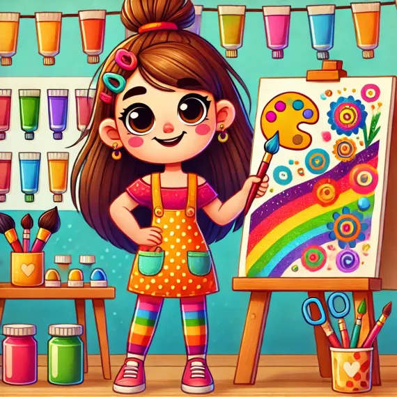

Diseñadora
-
Tú eres el artista del equipo. Tu misión es crear cosas que llamen la atención de las personas, como dibujos, carteles, vídeos o imágenes para su campaña.
- Usa colores, letras grandes y dibujos interesantes.
- Diseña algo que la gente quiera mirar y que les explique el problema de manera rápida.
- Asegúrate de que el trabajo sea claro y creativo.